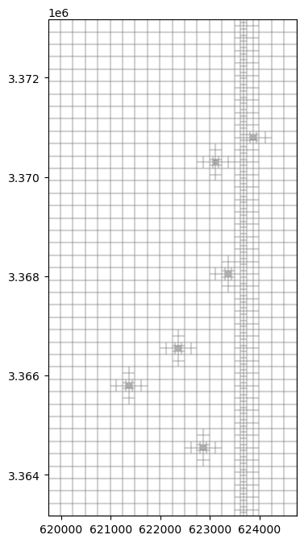
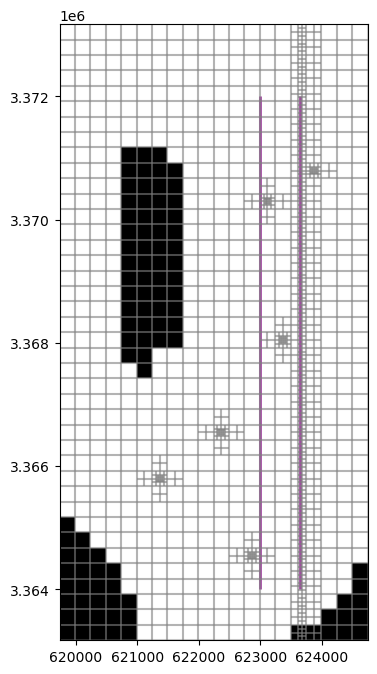
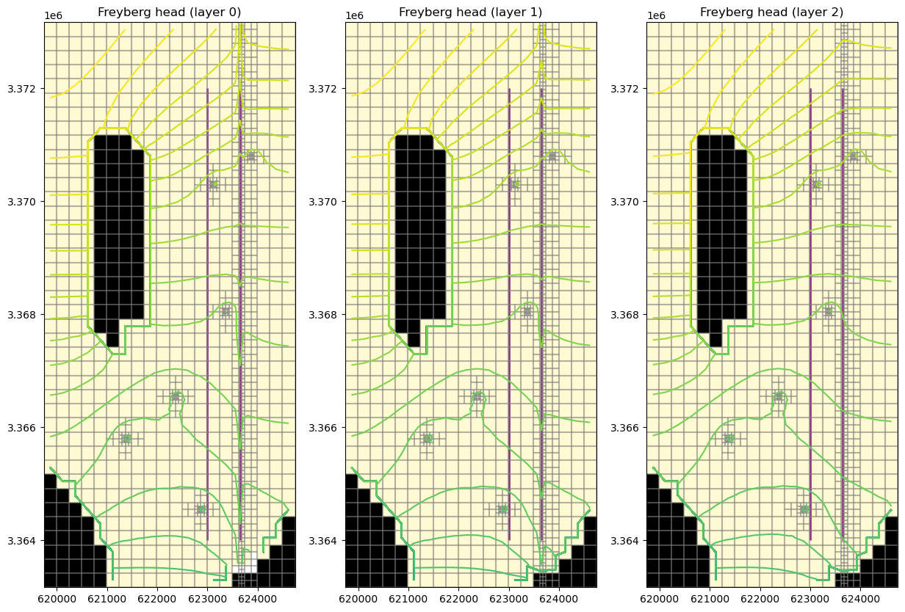
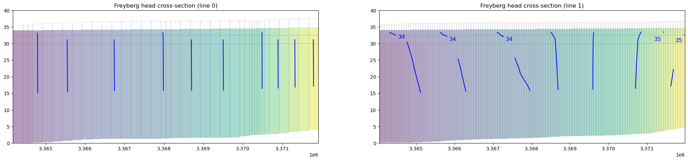
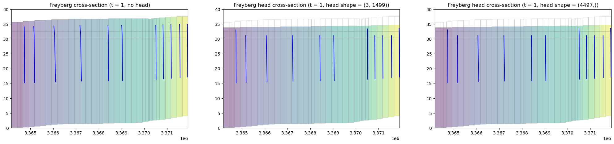
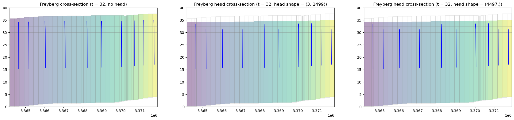

Note
MODFLOW-USG Freyberg demo
This example demonstrates a MODFLOW USG Freyberg model, including construction of an UnstructuredGrid from a specification file and plotting head data in cross-section.
First we locate the model directory.
[1]:
from pathlib import Path
import flopy
root_name = "freyberg.usg"
model_ws = Path.cwd().parent / "../examples/data" / root_name.replace(".", "_")
Now construct an UnstructuredGrid from a grid specification file.
[2]:
from flopy.discretization import UnstructuredGrid
mfgrid = UnstructuredGrid.from_gridspec(str(model_ws / f"{root_name}.gsf"))
Plot the grid in map view.
[3]:
import matplotlib.pyplot as plt
fig = plt.figure(figsize=(8, 8))
ax = fig.add_subplot(1, 1, 1, aspect="equal")
pmv = flopy.plot.PlotMapView(modelgrid=mfgrid, ax=ax)
pmv.plot_grid(alpha=0.1)
[3]:
<matplotlib.collections.LineCollection at 0x7f98fb62e7d0>

Create cross-section lines.
[4]:
from flopy.utils.geometry import LineString
lines = [
LineString(ls)
for ls in [
[(623000, 3364000), (623000, 3372000)],
[(623650, 3364000), (623650, 3372000)],
]
]
Load the model and retrieve inactive cells.
[5]:
gwf = flopy.mfusg.MfUsg.load(
f"{root_name}.nam",
model_ws=str(model_ws),
verbose=False,
check=False,
exe_name="mfusg",
)
bas6 = gwf.get_package("bas6")
ibound = bas6.ibound.array
Show the map view again with cross-section lines and inactive cells.
[6]:
fig = plt.figure(figsize=(8, 8))
ax = fig.add_subplot(1, 1, 1, aspect="equal")
pmv = flopy.plot.PlotMapView(modelgrid=mfgrid, ax=ax)
grid = pmv.plot_grid(alpha=0.2)
shps = pmv.plot_shapes(lines, edgecolor="purple", lw=2, alpha=0.7)
inac = pmv.plot_inactive(ibound=ibound)

Next, we can run the model and plot cross-sections of the resulting head. We will run the model in a temporary workspace to avoid altering the example data.
[7]:
from tempfile import TemporaryDirectory
# temporary directory
temp_dir = TemporaryDirectory()
work_dir = Path(temp_dir.name) / "freyberg_usg"
gwf.change_model_ws(str(work_dir))
gwf.write_name_file()
gwf.write_input()
success, buff = gwf.run_model(silent=True, report=True)
if success:
for line in buff:
print(line)
else:
raise ValueError("Failed to run.")
creating model workspace...
../../../../../../../tmp/tmpc4u3riio/freyberg_usg
MODFLOW-USG
U.S. GEOLOGICAL SURVEY MODULAR FINITE-DIFFERENCE GROUNDWATER FLOW MODEL
Version 1.5.00 02/27/2019
Using NAME file: freyberg.usg.nam
Run start date and time (yyyy/mm/dd hh:mm:ss): 2023/05/04 16:05:11
Solving: Stress period: 1 Time step: 1 Groundwater Flow Eqn.
Solving: Stress period: 2 Time step: 1 Groundwater Flow Eqn.
Solving: Stress period: 3 Time step: 1 Groundwater Flow Eqn.
Solving: Stress period: 4 Time step: 1 Groundwater Flow Eqn.
Solving: Stress period: 5 Time step: 1 Groundwater Flow Eqn.
Solving: Stress period: 6 Time step: 1 Groundwater Flow Eqn.
Solving: Stress period: 7 Time step: 1 Groundwater Flow Eqn.
Solving: Stress period: 8 Time step: 1 Groundwater Flow Eqn.
Solving: Stress period: 9 Time step: 1 Groundwater Flow Eqn.
Solving: Stress period: 10 Time step: 1 Groundwater Flow Eqn.
Solving: Stress period: 11 Time step: 1 Groundwater Flow Eqn.
Solving: Stress period: 12 Time step: 1 Groundwater Flow Eqn.
Solving: Stress period: 13 Time step: 1 Groundwater Flow Eqn.
Solving: Stress period: 14 Time step: 1 Groundwater Flow Eqn.
Solving: Stress period: 15 Time step: 1 Groundwater Flow Eqn.
Solving: Stress period: 16 Time step: 1 Groundwater Flow Eqn.
Solving: Stress period: 17 Time step: 1 Groundwater Flow Eqn.
Solving: Stress period: 18 Time step: 1 Groundwater Flow Eqn.
Solving: Stress period: 19 Time step: 1 Groundwater Flow Eqn.
Solving: Stress period: 20 Time step: 1 Groundwater Flow Eqn.
Solving: Stress period: 21 Time step: 1 Groundwater Flow Eqn.
Solving: Stress period: 22 Time step: 1 Groundwater Flow Eqn.
Solving: Stress period: 23 Time step: 1 Groundwater Flow Eqn.
Solving: Stress period: 24 Time step: 1 Groundwater Flow Eqn.
Solving: Stress period: 25 Time step: 1 Groundwater Flow Eqn.
Run end date and time (yyyy/mm/dd hh:mm:ss): 2023/05/04 16:05:11
Elapsed run time: 0.374 Seconds
Normal termination of simulation
Load head data from the output files:
[8]:
import numpy as np
hds = flopy.utils.HeadUFile(str(work_dir / f"{root_name}.hds"), model=gwf)
times = hds.get_times()
head = np.array(hds.get_data())
print(head.shape)
(3, 1499)
Plot the head colormap and contours for each layer.
[9]:
levels = np.arange(30, 35.4, 0.1)
fig = plt.figure(figsize=(15, 10))
for layer, h in enumerate(head):
ax = fig.add_subplot(1, len(head), layer + 1)
ax.set_title(f"Freyberg head (layer {layer})")
pmv = flopy.plot.PlotMapView(modelgrid=mfgrid, ax=ax)
mesh = pmv.plot_array(h, alpha=0.2)
grid = pmv.plot_grid(alpha=0.2)
shps = pmv.plot_shapes(lines, edgecolor="purple", lw=2, alpha=0.8)
inac = pmv.plot_inactive(ibound=ibound)
ctrs = pmv.contour_array(h, levels=levels)

A head argument can be provided to CrossSectionPlot.contour_array() to show the phreatic surface.
[10]:
fig = plt.figure(figsize=(25, 5))
for i, line in enumerate(lines):
ax = fig.add_subplot(1, len(lines), i + 1)
ax.set_title(f"Freyberg head cross-section (line {i})")
xsect = flopy.plot.PlotCrossSection(
modelgrid=mfgrid,
ax=ax,
line={"line": lines[i]},
geographic_coords=True,
)
xsect.plot_array(head, head=head, alpha=0.4)
xsect.plot_ibound(ibound=ibound, head=head)
xsect.plot_inactive(ibound=ibound)
contours = xsect.contour_array(
head,
masked_values=[999.0],
head=head,
levels=levels,
alpha=1.0,
colors="blue",
)
plt.clabel(contours, fmt="%.0f", colors="blue", fontsize=12)
xsect.plot_grid(alpha=0.2)
ax.set_ylim([0, 40]) # set y axis range to ignore low elevations

The head argument can be a 1D array or a 2D array matching the shape of the grid (i.e., head.shape == (layer count, ncpl)).
[11]:
line = lines[0]
for time in times[0:3]:
head = np.array(hds.get_data(totim=time))
head2 = np.hstack(head)
fig = plt.figure(figsize=(25, 5))
ax = fig.add_subplot(1, 3, 1)
ax.set_title(f"Freyberg cross-section (t = {int(time)}, no head)")
xsect = flopy.plot.PlotCrossSection(
modelgrid=mfgrid, ax=ax, line={"line": line}, geographic_coords=True
)
cmap = xsect.plot_array(
head2,
masked_values=[-999.99],
alpha=0.4,
)
contours = xsect.contour_array(
head2, levels=levels, alpha=1.0, colors="blue"
)
xsect.plot_inactive(ibound=ibound, color_noflow=(0.8, 0.8, 0.8))
xsect.plot_grid(alpha=0.2)
ax.set_ylim([0, 40]) # set y axis range to ignore low elevations
ax = fig.add_subplot(1, 3, 2)
ax.set_title(
f"Freyberg head cross-section (t = {int(time)}, head shape = {head.shape})"
)
xsect = flopy.plot.PlotCrossSection(
modelgrid=mfgrid, ax=ax, line={"line": line}, geographic_coords=True
)
cmap = xsect.plot_array(
head,
masked_values=[-999.99],
head=head,
alpha=0.4,
)
contours = xsect.contour_array(
head, head=head, levels=levels, alpha=1.0, colors="blue"
)
xsect.plot_inactive(ibound=ibound, color_noflow=(0.8, 0.8, 0.8))
xsect.plot_grid(alpha=0.2)
ax.set_ylim([0, 40])
ax = fig.add_subplot(1, 3, 3)
ax.set_title(
f"Freyberg head cross-section (t = {int(time)}, head shape = {head2.shape})"
)
xsect = flopy.plot.PlotCrossSection(
modelgrid=mfgrid, ax=ax, line={"line": line}, geographic_coords=True
)
cmap = xsect.plot_array(
head2,
masked_values=[-999.99],
head=head2,
alpha=0.4,
)
contours = xsect.contour_array(
head2, head=head2, levels=levels, alpha=1.0, colors="blue"
)
xsect.plot_inactive(ibound=ibound, color_noflow=(0.8, 0.8, 0.8))
xsect.plot_grid(alpha=0.2)
ax.set_ylim([0, 40])



[12]:
try:
# ignore PermissionError on Windows
temp_dir.cleanup()
except:
pass